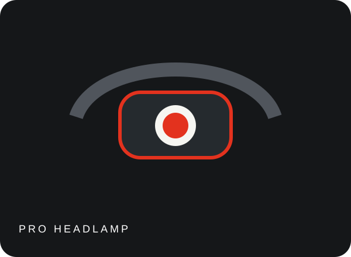

SCROLL TO EXPLORE ↓
FEATURED PRODUCTS
本季主推
拖动产品查看 360° 视角，或使用左右按钮切换主推产品。
FIND YOUR LIGHT你要去哪里？
你要去哪里？
让光先知道。
按真实使用场景选择产品，比记住复杂参数更简单。
NEW ARRIVALS新光线，
新光线，
正在发生。

ILLUMINATE EVERY CORNER不只是看见，
不只是看见，
而是更好地行动。
好的移动照明，不喧哗，却在关键时刻始终可靠。沃尔森以光学、结构和使用体验为核心，让每一束光都服务于真实的任务。
探索品牌实力 →BUILT FOR THE REAL WORLD为真实世界，
为真实世界，
认真做好每一盏灯。
从产品设计到耐用测试，每一步都为了让你在需要时相信手里的光。
找到属于你的那束光。
浏览完整产品系列，或从服务支持开始了解沃尔森。